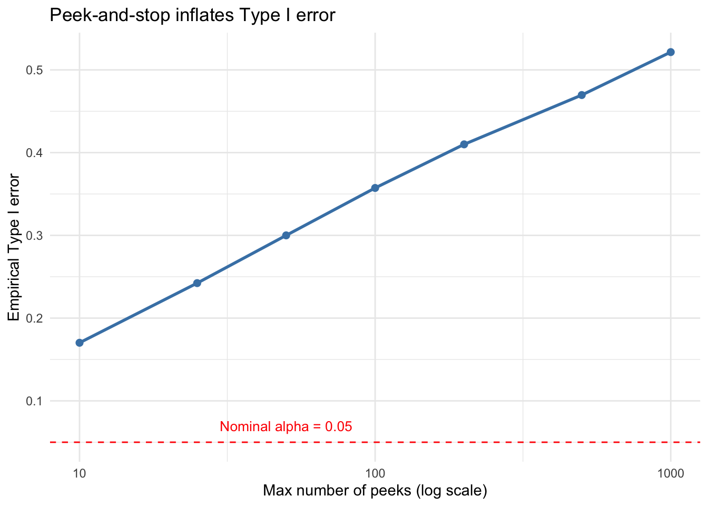
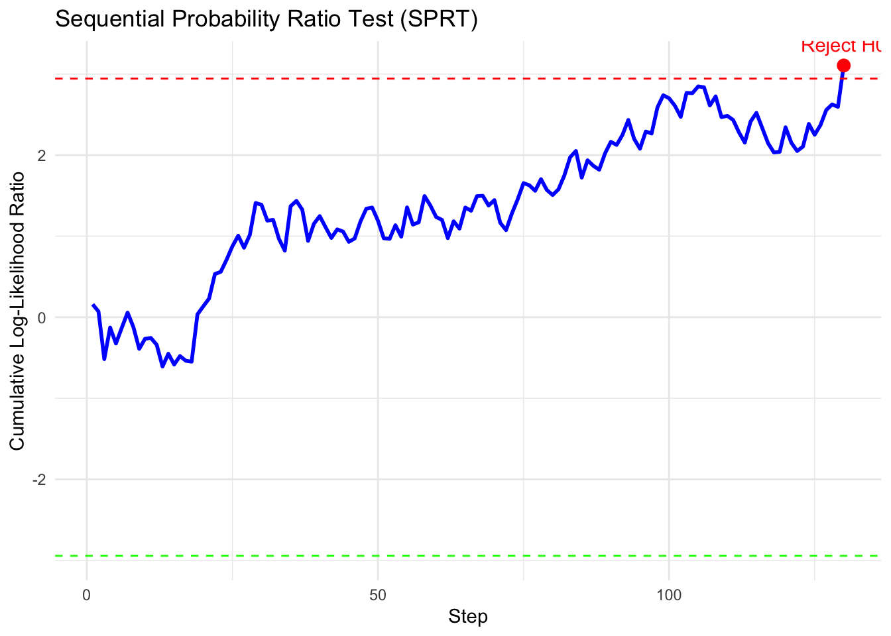
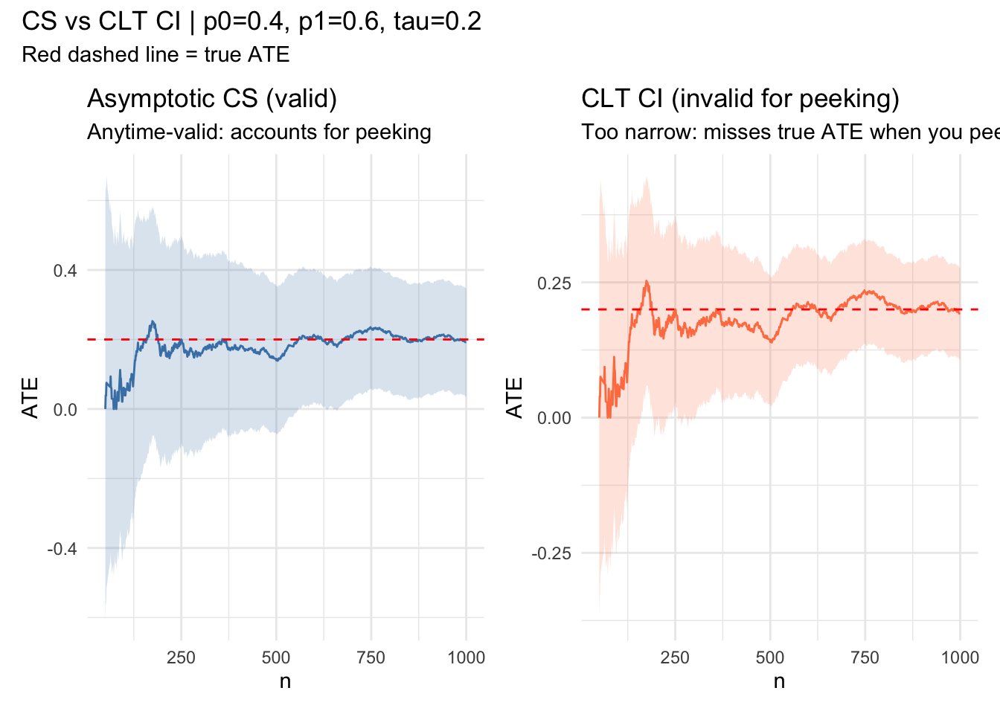

Power calculations \(\Rightarrow\) fix sample size beforehand
Just guess.
Simulation: Repeated \(z\)-Tests Under \(H_0\)
Setup. Under \(H_0\), draw \(X_i \overset{\text{iid}}{\sim} N(0,1)\) and compute a running \(z\)-test after each new observation. Stop and reject as soon as \(|Z_t| > z_{0.975} = 1.96\). Even though \(H_0\) is true, this “peek-and-stop” strategy rejects far more than 5% of the time.
The peek-and-stop strategy rejects \(H_0\) roughly 41% of the time despite \(\alpha = 0.05\) — a large inflation of Type I error. This gets worse as n_max grows: given infinite peeks you will eventually reject with probability 1 under the null.
library(ggplot2)peek_counts <-c(10, 25, 50, 100, 200, 500, 1000)type1 <-sapply(peek_counts, function(n) {mean(replicate(n_sim, peek_and_stop(n, z_crit)))})ggplot(data.frame(peeks = peek_counts, type1 = type1), aes(peeks, type1)) +geom_line(color ="steelblue", linewidth =1) +geom_point(color ="steelblue", size =2) +geom_hline(yintercept =0.05, linetype ="dashed", color ="red") +annotate("text", x =50, y =0.07, label ="Nominal alpha = 0.05",color ="red", size =3.5) +scale_x_log10() +labs(x ="Max number of peeks (log scale)",y ="Empirical Type I error",title ="Peek-and-stop inflates Type I error") +theme_minimal()

Type I error explodes as you allow more peeks
The Fix: Sequential Testing
First, why should we do sequential testing? Why not just prespecify \(n\)? There is a theorem, which is hard to write down exactly, but I call it the Always Do Sequential Testing Theorem Wald (1945). It states approximately that if you pick \(n\) via a power calculation, on average you could have gotten away with fewer samples had you used a sequential test instead.
What is a Sequential Test?
SPRT — Sequential Probability Ratio Test
Asymp CS — Asymptotic Confidence Sequences
SPRT
From Wald (1945). Given distributions \(P\) and \(Q\), test \(P\) vs. \(Q\).
\[X_1, \ldots, X_n \overset{\text{iid}}{\sim} P \text{ or } Q?\]
The LRT statistic is \(\frac{q_\theta}{p_\theta}(X_1, \ldots, X_n)\). That is the ratios of densities. You can reject when this is “large” and you calibrate under \(P\). The SPRT extends this to sequential data \(X_1, X_2, \ldots\)
Specify:\(\alpha\) (Type I error, e.g. 0.05), \(\beta\) (power, e.g. 0.8).
Platforms like Statsig implement this and it is quite easy to use.
Problem: Need to know likelihoods!
SPRT: Simple Example
Setting.\(P = N(0,2)\), \(Q = N(1, 2)\) (i.e. \(\theta = 1\)). The log-likelihood ratio after \(n\) observations is:
Wald’s thresholds: reject \(H_0\) (\(P\)) when \(\Lambda_n \geq \log(1/\alpha)\), accept \(H_0\) when \(\Lambda_n \leq \log(\beta)\).
set.seed(123)#install.packages(SPRT)library(SPRT)sd <-5sprt_normal <-function(data){sprt(data, alpha =0.05, beta =0.05, p0 =0, p1 =1, dist ="normal", sigma = sd)}# --- Under H0: X ~ N(0,1) ---cat("=== Under H0: X ~ N(0,1) ===\n")
=== Under H0: X ~ N(0,1) ===
h0_results <-replicate(n_sim, { x <-rnorm(500, mean =0, sd)sprt_normal(x)$decision})cat(sprintf("Reject H0 : %.3f (should be <~%.2f)\n",mean(h0_results =="Reject H0"), alpha))
Reject H0 : 0.044 (should be <~0.05)
# --- Under H1: X ~ N(1,1) ---cat("=== Under H1: X ~ N(1,1) ===\n")
=== Under H1: X ~ N(1,1) ===
h1_results <-replicate(n_sim, { x <-rnorm(500, mean =1, sd)sprt_normal(x)$decision})cat(sprintf("Reject H0 : %.3f (power, should be >~%.2f)\n",mean(h1_results =="Reject H0"), 1-0.05))
Reject H0 : 0.947 (power, should be >~0.95)
# lets plot if x is from the alternativex <-rnorm(500, mean =1, sd)sprt_plot(sprt_normal(x))

Single SPRT path under H1. The LLR crosses the rejection boundary early.
SPRT vs. Fixed-\(n\): Average Sample Size
One key payoff of the SPRT is that it stops early on average.
set.seed(99)sample_sizes <-function(dist =c("H0", "H1"), n_sim =5000) { dist <-match.arg(dist)replicate(n_sim, { x <-if (dist =="H0") rnorm(2000) elsernorm(2000, mean =1) res <-sprt_normal(x) res$n })}ss_h0 <-sample_sizes("H0")ss_h1 <-sample_sizes("H1")cat(sprintf("Mean sample size under H0 : %.1f\n", mean(ss_h0)))
Mean sample size under H0 : 148.9
cat(sprintf("Mean sample size under H1 : %.1f\n", mean(ss_h1)))
Mean sample size under H1 : 148.4
# you can calculate this with some algebra.fixed_n_required <-function(mu1, sigma, alpha =0.05, beta =0.05) {ceiling(((qnorm(1- alpha) +qnorm(1- beta)) * sigma / mu1)^2)}cat(sprintf("Fixed-n required (mu1=%.1f, sigma=%.1f, alpha=%.2f, power=%.0f%%): ~%d\n",1, sd, 0.05, (1-0.05) *100,fixed_n_required(1, sd, 0.05, 0.05)))
The SPRT typically stops well before the fixed-\(n\) sample size — this is the Wald-Wolfowitz theorem in action.
Testing to Confidence Sequences
Lastly, we’ll talk about moving from hypothesis testing to confidence intervals. There are a few things that aren’t very nice about the SPRT. It requires the analyst to
Know the distribution (and variance)
Specify the null and the alternative
In Statistics there is a dual between testing and confidence intervals. We showed before that one cannot do repeated z-tests. It might seem obvious then that one cannot do repeated confidence intervals. Therefore, we’ll introduce work on confidence sequences. Work on confidence sequences is very new! In this work we’ll look at a method from Waudby-Smith et al. (2024) with an application for tracking the ATE in an experiment.
We consider the following simple experiment where n is our number of total samples,
p_0,p_1 are the means under control and treatment and e is the propensity score of treatment.
We construct a confidence sequence imagining that the data was coming in sequentially. If the
confidence sequence moves away from zero, we could have stopped collecting data and deployed
whatever the treatment was. We also show the erroneous repeated confidence intervals and if you run this repeated times you will see some miscoverage events.
library(ggplot2)library(patchwork)# --- Parameters ---n <-1e3; p0 <-0.4; p1 <-0.6; e <-0.5tau <- p1 - p0running_sd <-function(x) { n <-seq_along(x) M2 <-numeric(length(x)) mu <-cumsum(x) / nfor (t in2:length(x)) { d <- x[t] - mu[t -1] M2[t] <- M2[t -1] + d * (x[t] - mu[t]) }sqrt(pmax(M2 /pmax(n -1, 1), 1e-10))}robbins_confseq <-function(x, alpha =0.05, rho =1) { n <-seq_along(x) mu_hat <-cumsum(x) / n s_n <-running_sd(x) radius <- s_n *sqrt((2* (n * rho^2+1) / (n^2* rho^2)) *log(sqrt(n * rho^2+1) / alpha))data.frame(lower = mu_hat - radius, upper = mu_hat + radius)}Z <-rbinom(n, 1, e)Y <-ifelse(Z ==1, rbinom(n, 1, p1), rbinom(n, 1, p0))phi <- Z * Y / e - (1- Z) * Y / (1- e)cs <-robbins_confseq(phi)# CLT CI: just z * se, no correction for peekingns <-1:nmu_hat <-cumsum(phi) / nsclt_hw <-qnorm(0.975) *running_sd(phi) /sqrt(ns)df <-data.frame(t = ns,ate = mu_hat,cs_lo = cs$lower, cs_hi = cs$upper,clt_lo = mu_hat - clt_hw,clt_hi = mu_hat + clt_hw)[50:n, ]p1_plot <-ggplot(df, aes(t)) +geom_ribbon(aes(ymin = cs_lo, ymax = cs_hi), alpha =0.2, fill ="steelblue") +geom_line(aes(y = ate), color ="steelblue") +geom_hline(yintercept = tau, color ="red", linetype ="dashed") +labs(x ="n", y ="ATE",title ="Asymptotic CS (valid)",subtitle ="Anytime-valid: accounts for peeking") +theme_minimal()p2_plot <-ggplot(df, aes(t)) +geom_ribbon(aes(ymin = clt_lo, ymax = clt_hi), alpha =0.2, fill ="coral") +geom_line(aes(y = ate), color ="coral") +geom_hline(yintercept = tau, color ="red", linetype ="dashed") +labs(x ="n", y ="ATE",title ="CLT CI (invalid for peeking)",subtitle ="Too narrow: misses true ATE when you peek") +theme_minimal()p1_plot + p2_plot +plot_annotation(title =sprintf("CS vs CLT CI | p0=%.1f, p1=%.1f, tau=%.1f", p0, p1, tau),subtitle ="Red dashed line = true ATE" )

Miscellaneous
Group Sequential Designs are popular in FDA regulatory settings and in industry.
The package gsDesign is the go-to package for this method
Forces the analyst to pick times where they may stop the experiment
Waudby-Smith, Ian, David Arbour, Ritwik Sinha, Edward H Kennedy, and Aaditya Ramdas. 2024. “Time-Uniform Central Limit Theory and Asymptotic Confidence Sequences.”The Annals of Statistics 52 (6): 26132640.